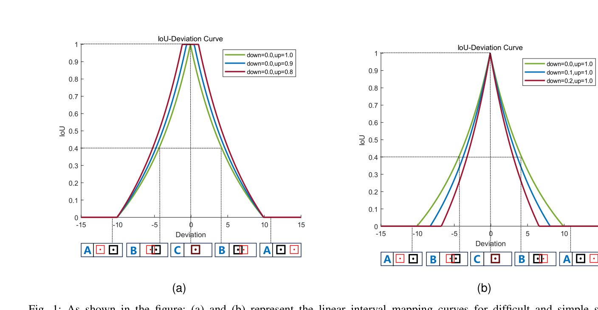
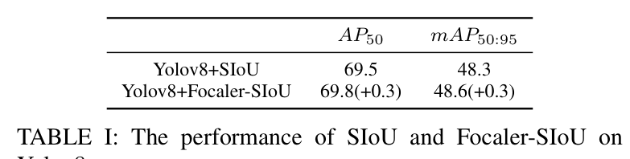
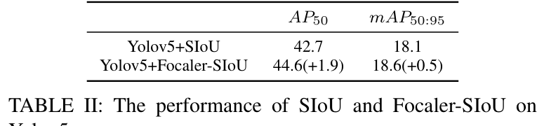

用线性区间映射重构 IoU 损失，按检测任务的需要聚焦困难样本或简单样本，以附加项形式 plug-in 到五种现有 IoU 损失上。
指出不同检测任务的难易样本构成不同：一般任务聚焦简单样本，微小任务聚焦困难样本。
仅凭下界 d 与上界 u 两个参数完成难/易样本聚焦，形式简洁且即插即用。
以附加项形式组合 GIoU、DIoU、CIoU、EIoU、SIoU，在两类任务上验证增益方向一致。
Focaler-SIoU 在 AI-TOD 微小目标上 AP50 提升达 1.9，在 VOC 一般目标上提升 0.3，增益方向与分析一致。
暂未有工作让同一个回归损失能够按任务的样本构成切换聚焦对象，这正是本文要解决的问题。
IoU = |B ∩ Bgt| / |B ∪ Bgt|
Ω = ∑t=w,h (1 − e−ωt)θ，θ = 4
Ω 是 SIoU 的形状代价，刻画尺寸差异：ωw = |w−wgt| / max(w, wgt)，ωh = |h−hgt| / max(h, hgt)。
这一族损失的共同点是只使用几何量，没有任何一项考虑样本难易——为线性区间映射留下了改造空间。
IoUfocaler = 0 (IoU < d) | (IoU−d)/(u−d) (d < IoU < u) | 1 (IoU > u)
区间 [d, u] 内的映射斜率为 1/(u−d)，区间外样本映射为 0 或 1、损失为常数，不再提供梯度。
LFocaler-IoU = 1 − IoUfocaler
等价于把梯度集中分配给 IoU 落在 (d, u) 区间内的样本。调节 d 与 u 即可切换聚焦对象。

LFocaler-XIoU = LXIoU + IoU − IoUFocaler
附加项 IoU − IoUFocaler 把原损失中的 IoU 项替换为映射后的聚焦形式，距离、形状等惩罚项原样保留。X 可取 G、D、C、E、S。


两类任务的曲线形态差异与增益大小差异方向一致，验证了按样本构成切换聚焦对象的有效性。
从任务层面分析难易样本分布对边界框回归的影响，指出聚焦对象应随任务样本构成切换，问题视角新颖。
仅凭区间端点 d 与 u 两个参数完成聚焦，形式简洁且可 plug-in 组合五种 IoU 系损失。
在 VOC 与 AI-TOD 两类难度构成相反的数据集上用 YOLOv8、YOLOv5 验证，增益方向与分析一致。